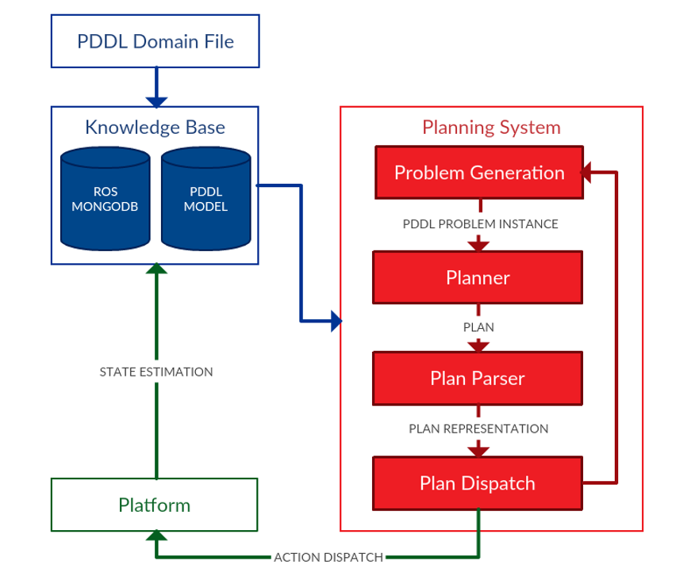

What is ROSPlan?
The ROSPlan framework provides a generic method for task planning in a ROS system. ROSPlan encapsulates both planning and dispatch. It possesses a simple interface, and includes some basic interfaces to common ROS libraries. It serves as a framework to test:
- alternate approaches to state estimation
- planners for robotics
- plan representations
- dispatch and execution of plans

Documentation